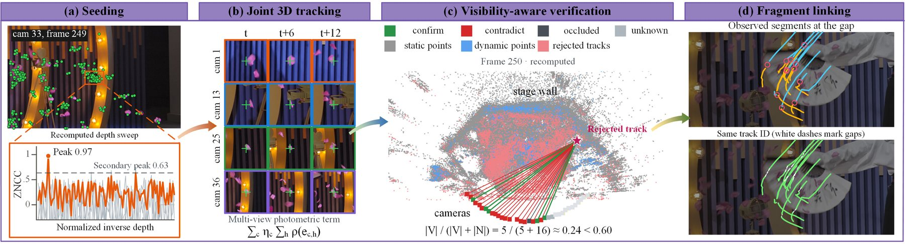

C1
Sparse trajectory generation
Joint multi-view 3D tracking, verified by visibility
- Seeding. Shi–Tomasi corners in cells without a live track; depth from an inverse-depth sweep that averages the two best ZNCC scores across source views, which limits the influence of occlusion.
- Joint tracking. A 3D Lucas–Kanade step solves one 3×3 Gauss–Newton system on the shared position using all valid views, with Huber pixels, Cauchy view weights and a constant-velocity prior.
- Visibility-aware verification. Only a view that sees through a sample contradicts it; occlusion does not. Thin structures survive, and chance agreement at wrong depths does not.
- Fragment linking. Tracks broken by fast motion are rejoined by forward and backward motion prediction with mutual best matches.
